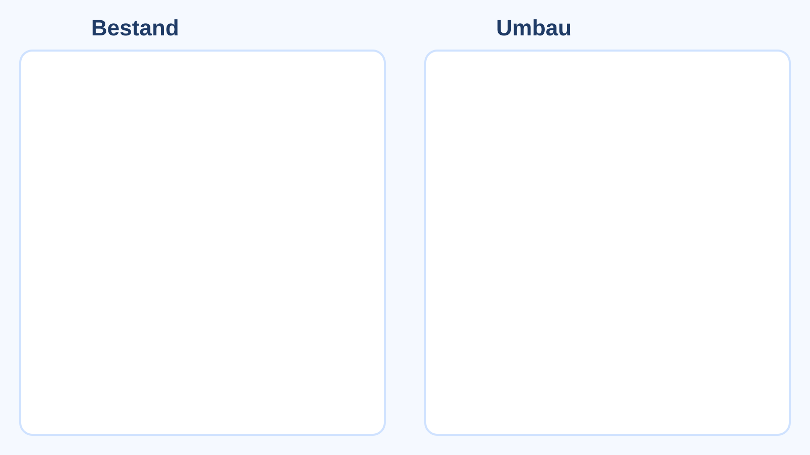

Bestand / Umbau – Lageplan
Cleanes Überblicksbild mit beiden Zuständen. Klicke auf die Marker für Detailansichten.

Wirtschaftlichkeit
Inhalt folgt. Hier ergänzen wir später Kosten, CAPEX/OPEX, ROI und Sensitivität.
Technologie
Inhalt folgt. Hier ergänzen wir später Prozessänderungen, Komponenten und Integrationsrisiken.
Nachhaltigkeit (Carbon Footprint)
Inhalt folgt. Hier ergänzen wir später CO₂-Bilanz, Scope-Abgrenzung und Einsparpotenziale.